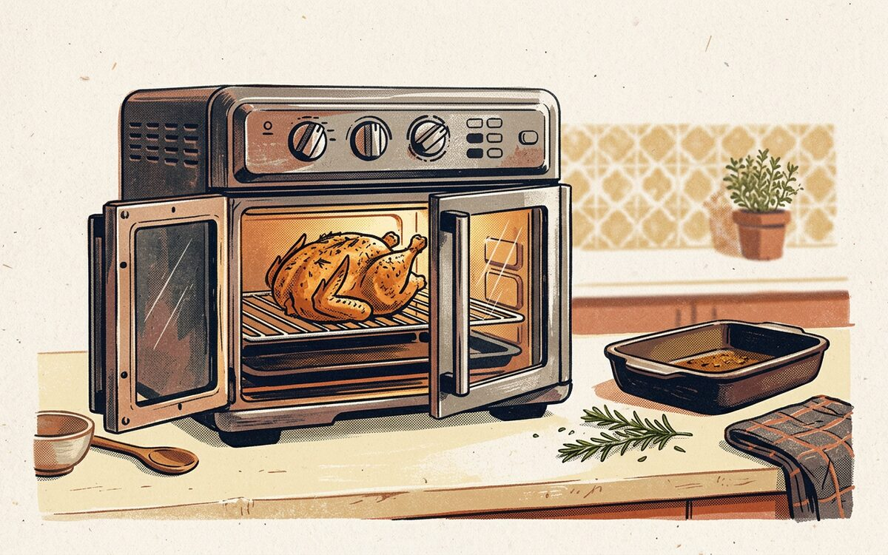

As an Amazon Associate I earn from qualifying purchases. This site contains sponsored product links. Prices and availability are shown on Amazon — check Amazon for current details. Full disclosure
Guide · Capacity · Season: Holiday cooking
Can it fit a whole chicken? The two measurements that answer it, before you order
Quarts do not tell you whether a bird fits. What does: the cavity you can actually use and the 165°F check you have to be able to make inside it. Capacity, footprint and food safety across three air fryers.
By the ShopNow Kitchen Desk · Published 2026-11-20 · Updated 2026-11-20 · 4 min read · This category · Sources

Editorial illustration of an oven-style fryer with a whole bird on the rack. Not a product photograph, and not a fit guarantee.
“Will it take a whole chicken?” is the question that turns an air-fryer browse into a decision, and the capacity number in the product name is the wrong place to answer it. Two measurements settle it — one you take off a listing, one you take off your own bird with a tape measure.
1. What the listings on this shelf actually state
Product
Capacity, as listed
Exterior footprint, as listed
Weight, as listed
Chefman 6 Qt Dual Basket
6 Quart, described as two independent 3-Qt baskets
13.38"D x 11.81"W x 10.63"H
13.3 pounds
Chefman 8 Qt TurboFry
8 Quarts, one XL basket
12.75"D x 13.5"W x 10"H
12.8 Pounds
Emeril Lagasse 26QT French Door
26QT (24.6 Liters), oven-style cavity
16.9"D x 15.8"W x 14.8"H
26.5 Pounds
Read the third column carefully: those are the exterior dimensions the listings publish. None of the three states an interior cavity measurement, so the usable space is always smaller than the box you are comparing to your shelf. That is the number to chase down on the manufacturer's spec sheet before you buy — not to guess at.
The Emeril listing's own bullet copy states a 6-lb chicken on the rotisserie and a 12" pizza. That is a seller's figure, recorded here because it is checkable on the page — not a measurement this site made, and not a promise about your bird. Where a listing contradicts itself (the same page says “Six Cooking Accessories Included” in the title and lists seven in the bullets, and 24 presets in the title against 25 in the bullets), this site publishes both readings and flags them instead of picking a side — see the flag register.
A bird is only done when it is done. USDA FSIS cooks all poultry to a minimum internal temperature of 165°F, and for a whole bird says to check the internal temperature in three places: the innermost part of the thigh, the innermost part of the wing, and the thickest part of the breast, avoiding bone. If you stuff the bird, the centre of the stuffing must also reach 165°F — and FSIS adds that for optimum safety you should not stuff whole poultry at all.
Now look at those three check points in a basket that is 10 inches tall with a basket inside it. If your hand cannot get a thermometer into the thigh and the wing without negotiating the basket wall or burning your knuckles, the appliance is the wrong size regardless of how the bird fits. This is the constraint that quietly rules out more machines than capacity does.
4. Basket shape changes the answer, not just the volume
Two 3-quart baskets — a whole bird does not go in one of them as a bird. This shape is for two different foods finishing together, which is why the listing pairs it with a Sync Finish feature.
One 8-quart basket — a wide single layer; a bird has to lie flat, and pieces, thighs and spatchcocked halves are what this shape is genuinely good for.
26QT oven cavity with doors — the only shape on this shelf with vertical clearance and a rack, and it costs 16.9 inches of counter depth and 26.5 pounds of permanence.
Nothing above is a judgement about which is better. It is geometry: the listed dimensions either leave room for a bird and a thermometer hand, or they do not.
A three-minute way to settle it before you buy
Measure your usual bird (or the piece you cook most) at its widest and tallest points with a tape.
Take the exterior numbers off the listing and subtract a wall allowance — you are buying interior space, and no listing on this shelf publishes it.
Check you can reach three places on the bird with a thermometer while the basket or door is open.
Confirm the counter depth where the unit will live permanently, and that the outlet is reachable without an adapter cord.
What this page will not do. It states no cooking times, no “juiciest bird” claim and no test result, because nobody here has roasted a chicken in any of these units. The appliance numbers are copied from the listings; the temperature and placement rules are USDA FSIS’s. No prices appear on this site — Amazon’s Program Policies keep price display on Amazon’s own served pages.
Two independent 3-quart baskets with easy-view windows, Sync Finish and Hi-Fry, named in the listing title — the shape you buy when two things have to finish at the same time.
Capacity: 6 Quart (two 3-Qt baskets)
Fits: 13.38"D x 11.81"W x 10.63"H
On the scale: 13.3 pounds
Decide on the listed footprint before the capacity: this listing gives 13.38"D x 11.81"W x 10.63"H and 13.3 pounds, so measure the strip of counter you can give up permanently before you read a single preset list.
A 26QT French-door oven cavity with one-touch presets and cooking accessories listed — the largest interior on this shelf by listed capacity (26QT against 8QT and 6QT), in a body the listing measures 16.9" deep.
Capacity: 26QT (24.6 Liters)
Fits: 16.9"D x 15.8"W x 14.8"H
On the scale: 26.5 Pounds
Decide on the cavity, not the preset count: 26QT (24.6 Liters) inside a 16.9"D x 15.8"W x 14.8"H shell, so the question is whether your counter depth and cabinet clearance survive a 26.5-pound permanent appliance.
One 8-quart XL nonstick basket, listed as dishwasher-safe, with a 450°F Hi-Fry option named in the listing title — the tall-basket shape rather than an oven cavity.
Capacity: 8 Quarts
Fits: 12.75"D x 13.5"W x 10"H
On the scale: 12.8 Pounds
Decide on one-layer cooking area, not the quart number: the listing gives a single 8-quart basket in a 12.75"D x 13.5"W x 10"H body, so count how many hands-on layers your usual meals need before you compare it with a twin-basket unit.
How this page was made. Written from published listings and official guidance, by an editorial desk — not from hands-on use, so no page here claims testing. Every table row links to its source; anything we could not confirm is left blank and listed on Flagged for review. Sponsored links are marked Sponsored.
Get the next comparison — checklist first, hype never.
One email when a new guide publishes.
There is no newsletter running yet. The form records that you pressed Subscribe in your own browser and sends your address nowhere. Which provider, which consent flow and how long addresses would be kept are open questions on the questions page, and the disclosure says exactly what this site does and does not collect.